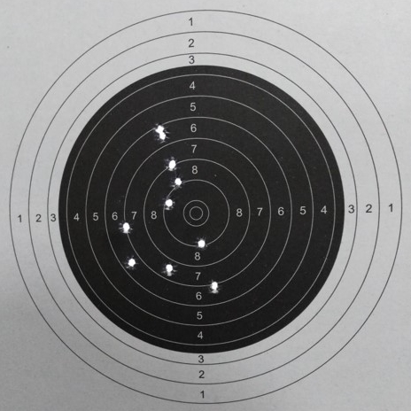

Developed a weapon zeroing system for the Bangladesh Army. In this system, an android application can process the target (shooting paper) image and generate the correction value. Based on that correction value the application will command the machine to zero the weapon automatically. A web application is also developed where the sub-unit commander can monitor the firing results and able to provide necessary corrections for specific firers.
Technologies
 Python
Python MySQL
MySQL Javascript
Javascript CSS
CSS HTML
HTML Arduino
Mega
Arduino
MegaTechnical Sheet
One of the most important aspects of basic soldering is weapon efficiency and its analysis. Weapon zeroing and its analysis is two major domains that works as a benchmark for achieving the goal of weapon training. Zeroing (or sighting in) a rifle is the process of aligning the sights on the weapon with the rifle so soldier can accurately aim at the target from a set distance.
Weapon Zeroing system is a software based zeroing tool which is designed for basic weapon of Bangladesh Army (Assault Rifle BD 08 or similar weapon). In this system the required correction is calculated by the algorithm which follow the zeroing technique prescribed by School of Infantry and tactics. In the range analysis part the basic fault of a firer is identified by analyzing the pattern of the impacts in the target. At the same time the sub-unit commander can see the progress of fire of his soldiers by visiting the website. For preparing the zeroing tool three stepper motors are used which can be utilized in any weapon of same specification. For the identification of the firing impact computer vision is used.
The bullet pierced target’s image will be collected using camera which will be processed using the mobile application incorporated in the system. The application will be mainly used for weapon correction value calculation. The firer logging into their profile will enter the weapon correction section. He will take photo of the target. The application will detect the holes pierced in the target by the bullets.  OpenCV framework is used to detect the holes in the target. It will calculate the MPI value of the weapon. When the firer click for zero command, a Bluetooth interface sends the zeroing value directly to the arduino for zeroing the weapon. The MPI value will be sent to the database at the same time, where at the back end the efficiency analysis of the firer is done. Based on the error generated, the quality of firer is determined and the firer’s error type is generated. The android application will use the same database used for web application . Records of all user information is stored in a mysql database which shares connection with all the devices through wifi/cable network.


A metal framework is designed for the hardware section which will contain the weapon where it will be zeroed. For zeroing purpose, a linear actuator and a gear motor will be attached in the framework. The linear correction of the weapon will be done by the linear actuator. Based on the values of the correction sent by mobile application using Bluetooth interface, the linear actuator will move forward and backward. Linear actuator movement is controlled on basis of time. Based on the calculation of linear correction, its movement zero the weapon linearly. The front side tip is corrected by gear motor. However, there arises the problem of number of rotations calculation since in gear motor the number of rotation calculation is not possible. To solve this problem, it is interfaced to rotation sensors through pinions. The pinions are interfaced with rotary encoder. It controls the number of rotations of the motor through the pinions as per command from the mobile application through arduino.
The mobile application detects bluetooth interface connected via bluetooth. It pairs with the device. The processed data from the target image will fetch the zeroing value for motor rotation and linear actuator displacement passing through algorithm for finding zeroing value. The motor rotation value and the linear actuator displacement value through the bluetooth interface finally to the arduino will be sent to the gear motor and linear actuator which will zero the front size and bring linear correction in the weapon respectively.

The web application is built using HTML, CSS, PHP, Javascript and MySQL has been used to implement the database of the system. The user need to log in and complete their profile using this web application. Besides, the firer can observe the record of their performance in firing logging in his account. The sub unit commander will have the control to observe the overall performance of all the soldiers under him. The complete web system will be under control of the admin where he can create, update, delete, lock and unlock user.